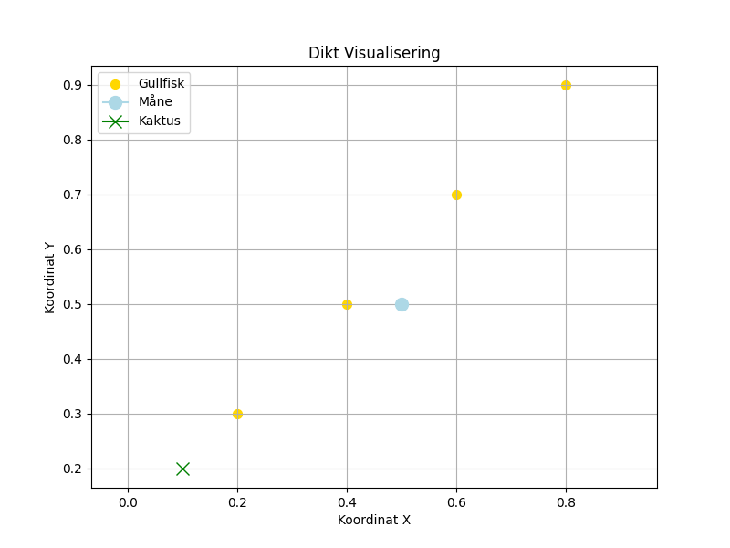

I en rusten tepose, svømmer små gullfisker, mens månen leker gjemsel med en ensom kaktus.

import matplotlib.pyplot as plt
import numpy as np
# Dikt
dikt = """I en rusten tepose,
svømmer små gullfisker,
mens månen leker gjemsel
med en ensom kaktus."""
# Data for fisker (x, y) - posisjoner i teposen
x_fisk = [0.2, 0.4, 0.6, 0.8]
y_fisk = [0.3, 0.5, 0.7, 0.9]
# Data for måne og kaktus - koordinater i et 2D-rom
x_maane = 0.5
y_maane = 0.5
x_kaktus = 0.1
y_kaktus = 0.2
# Lag en figur og akser
fig, ax = plt.subplots(figsize=(8, 6))
# Tegn fiskerne som punkter
ax.scatter(x_fisk, y_fisk, s=50, color='gold', label='Gullfisk')
# Tegn månen og kaktusen
ax.plot(x_maane, y_maane, marker='o', ms=10, color='lightblue', label='Måne')
ax.plot(x_kaktus, y_kaktus, marker='x', ms=10, color='green', label='Kaktus')
# Konfigurer plottet
ax.set_title('Dikt Visualisering')
ax.set_xlabel('Koordinat X')
ax.set_ylabel('Koordinat Y')
ax.axis('equal') # Gjør at x- og y-aksene har samme skala
ax.grid(True)
ax.legend()
# Lagre figuren
plt.savefig(output_path)execution_ok=True fallback_used=False image_ok=True